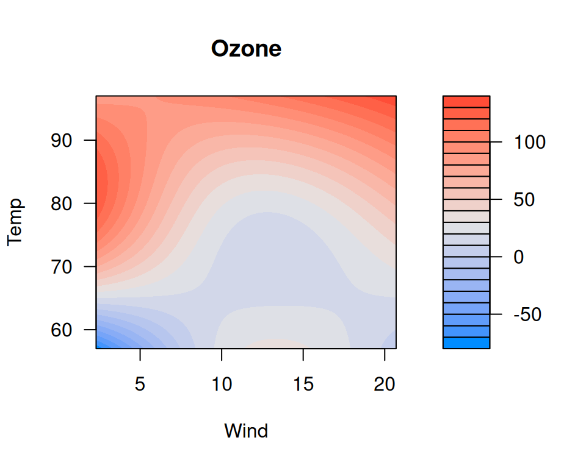
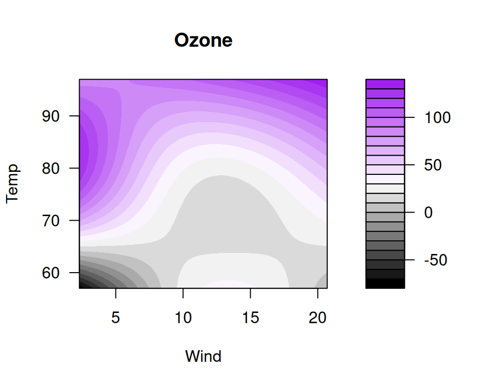
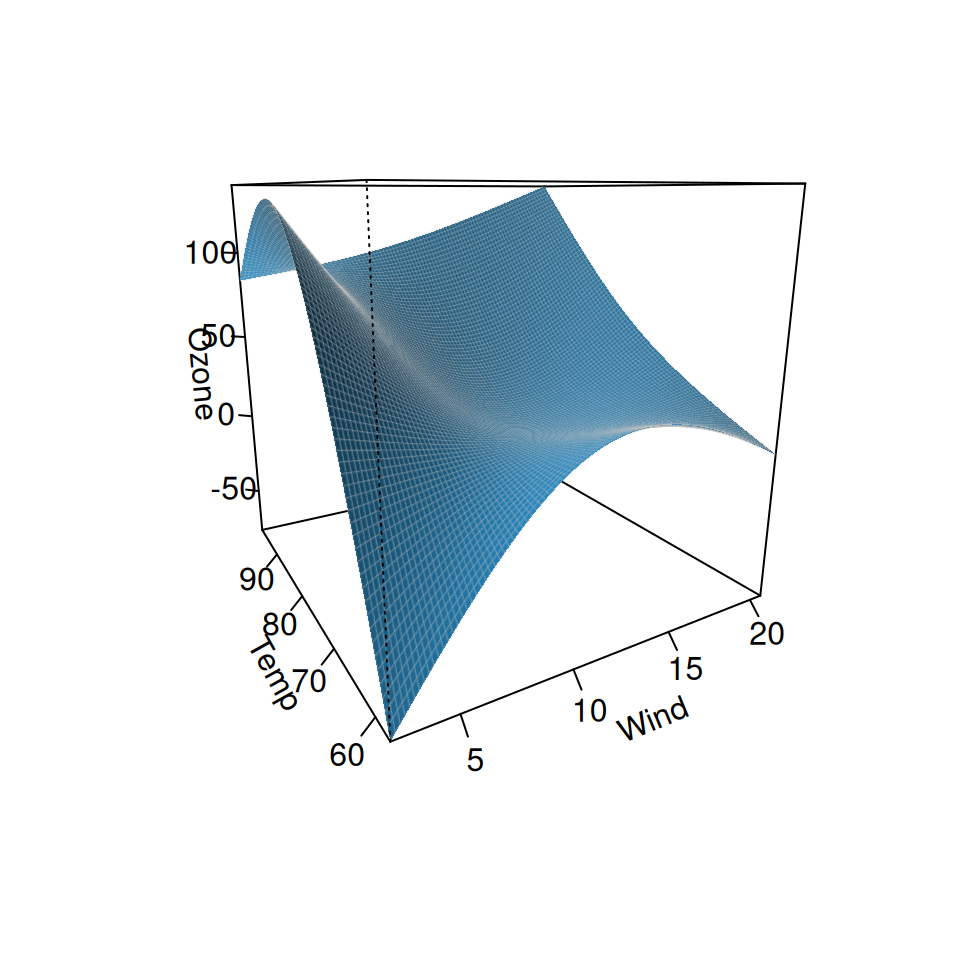

Suppose we have a model with a complicated interaction between two continuous variables:
We might wish to visualize how ozone depends on wind and temperature
as a continuous regression surface. visreg2d provides two
main options for this, filled contour plots and perspective plots.
Filled contour plots
The default is to provide a contoured image plot:
visreg2d(fit, "Wind", "Temp")
Here, wind and temperature are laid out on a two-dimensional grid,
and colors are used to represent the level of ozone. A legend is
provided to the left. R’s filled.contour function is used
to generate the plot, so if you wish to change any options, you will
need to look at ?filled.contour to see the correct syntax.
For example, if we want different colors,
visreg2d(fit, "Wind", "Temp", color.palette=colorRampPalette(c("black", "white", "purple")))
Perspective plots
The other option provided by visreg2d is to represent
the surface as a three-dimensional image. This can be done in a static
manner using type="persp":
visreg2d(fit, "Wind", "Temp", plot.type="persp")
Or dynamically using type="rgl":
visreg2d(fit, "Wind", "Temp", plot.type="rgl")For the interactive rgl option, you will need to install
the rgl package first.